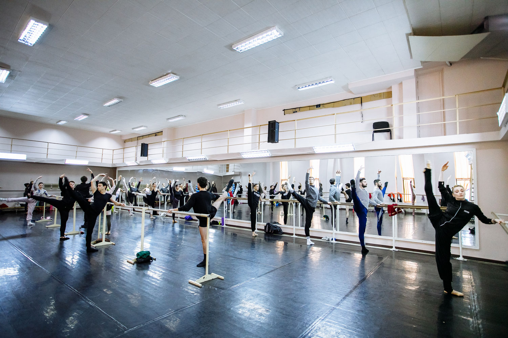

Barre to Barre App
UX Research - Individual Project - Autumn 2022 - The Hague Unviersity of Applied Sciences
Project aim
Develop an online platform that provides a variety of
resources such as tutorials, motivational quotes, and inspiring stories from one ballerina to another.
The target users are ballet dancers of any age, level, and background.
Project goals
1. To provide resources and support in order to help ballet dancers improve their mental and physical health.
2. To connect ballerinas from all around the world to share their experiences and support each other.
3. To increase the awareness of the difficulties that ballerinas face and the importance of finding solutions.
Research description
Time of research: November 2022
Place: The Hague, Netherlands
Research problem: What are the physical, psychological, and emotional of ballet dancers, and how can an online platform best support and facilitate the sharing of content related to these needs?
Research objectives
1. Identify the common physical, psychological, and emotional needs of ballet dancers.
2. To investigate the experience using related software solutions.
3. To explore how they share their experiences and help each other in the ballet community.
4. Determine the most effective methods for an online platform to support and facilitate the sharing of content.
Methodology- qualitative
Reasons:
1. Suitable for discovery research for a new product to know the experiences and needs.
2. It is hard to get useful information through quantitative research on the discovery stage.
3. Great way to uncover unexpected findings and insights.
Data gathering methods
Overt Non-participant Observation:
I was able to capture the environment, the interactions between the dancers, and the physical challenges faced by them.
Semi-structured and ethnographic interviews with follow-up questions.


Data analysis method
To analyze the qualitative data I used the Affinity Diagram method which involves creating a visual representation of the data by grouping them together in a way that makes sense. The groups are then labeled, and the relationships between the groups can be explored.

Research summary
Many ballerinas experience very low self-esteem, are self destructive and judge themselves for some extra pounds. Results showed that the most common psychological and emotional needs were for motivation and support. In terms of sharing experiences and helping each other, the results showed that ballet dancers rely heavily on online communities and forums to connect and share their experiences. The most effective methods for an online platform to support and facilitate the sharing of content were identified as being social media integration, and the ability to post and comment on content.